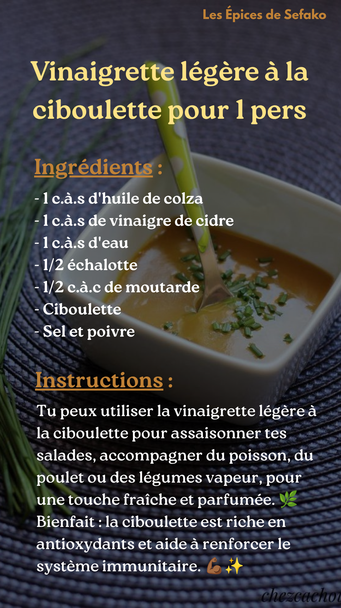
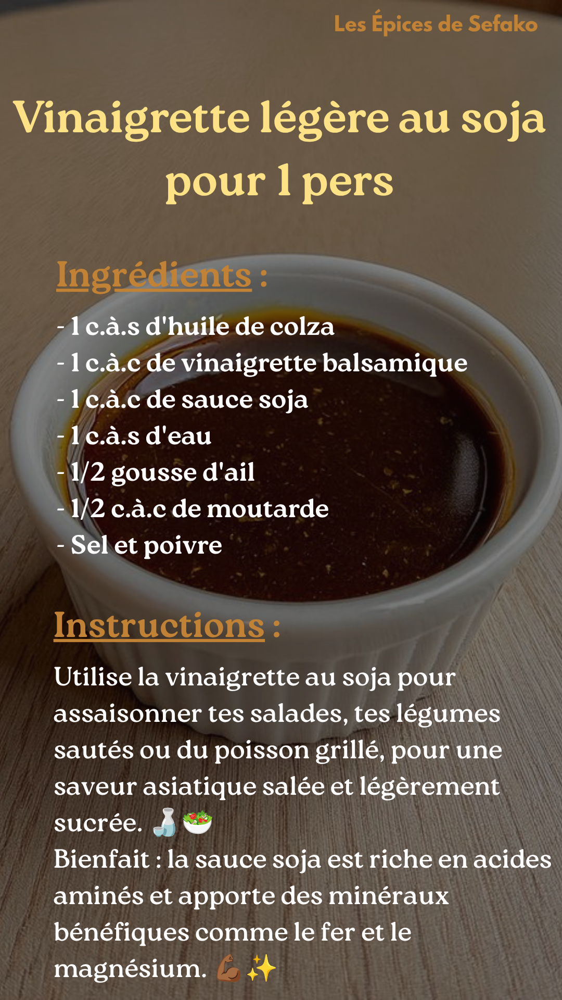

Réalisations de Grace
Aperçu de quelques-unes de mes créations visuelles et montages vidéo




Polyvalente, organisée et adaptable. J'allie rigueur d'analyse, renforcée par ma formation en comptabilité, à des compétences en communication digitale et en gestion administrative afin de contribuer efficacement à la réussite de vos projets.
Titulaire d’une licence en Comptabilité Contrôle Audit et actuellement en licence d'anglais, je mets mon dynamisme au service de votre organisation. Mon parcours m'a permis de développer une aisance naturelle en communication ainsi qu'une rigueur exemplaire dans les analyses et le suivi de dossiers.
Gestion | Com | Admin
Rapports & Synthèses
Relation Client
Licence en Comptabilité, Contrôle, Audit
ESGIS Lomé | 2021 – 2025
Domaines : Sciences économiques et de gestion.
Licence fondamentale en anglais
Université de Lomé | 2022 – En cours
Domaines : Lettres, littérature et linguistique.
KOUGBLENOU Afi Sefako – Lomé, Togo
Gestion de la communication TikTok (@lesepicesdesefako), création de contenus viraux, gestion de la relation clients et vente directe.
Freelance – Lomé, Togo
Prospection immobilière sur Facebook et TikTok, visites des lieux, mise en relation entre propriétaires et locataires et conseil clients.
Talents Spectacles Togo – Lomé, Togo
Accueil clients, gestion de caisse et reporting quotidien à la hiérarchie.
Akotse Kokou (Développeur Web Freelance) – Lomé, Togo
Prospection, facturation, gestion de projets via Trello, rédaction de synthèses fonctionnelles, analyse des besoins clients et aide à la création de sites web.
SEFEC - TOGO – Lomé, Togo
Accueil clients, conseil sur les produits solaires et gestion administrative des ventes.
Aperçu de quelques-unes de mes créations visuelles et montages vidéo


En tant qu'assistante de promotion, je gère l'image digitale des Épices de Sefako. Ma mission : transformer des produits artisanaux en une marque engageante sur TikTok à travers des vidéos créatives et un storytelling percutant.
Jeune diplômée dynamique et polyvalente, je suis à la recherche de nouvelles opportunités en tant qu'assistante de direction, chargée de communication ou assistante comptable.